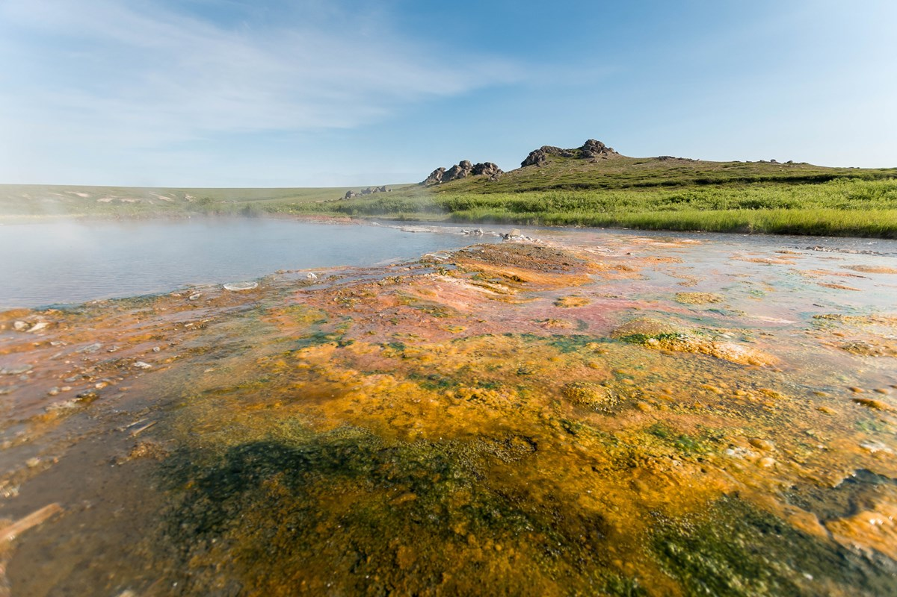
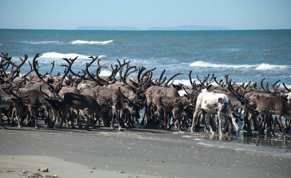
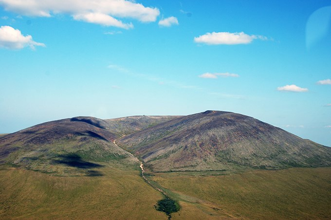
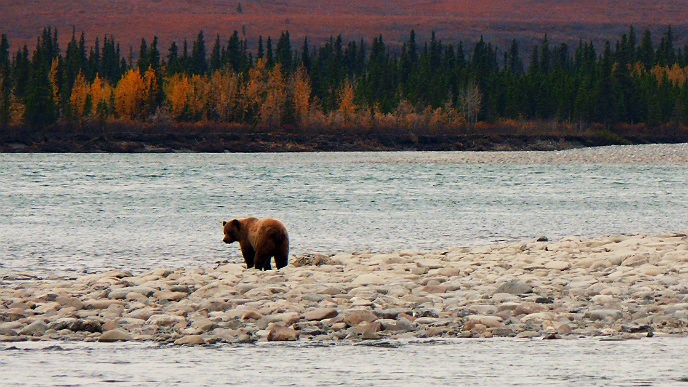
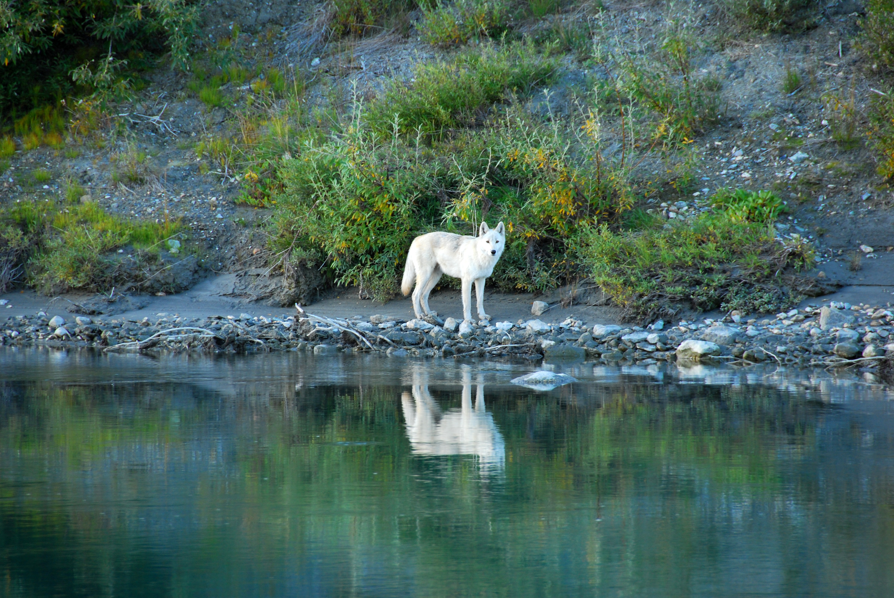
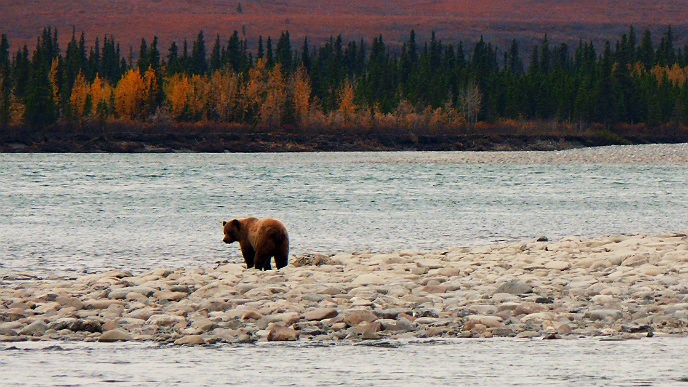
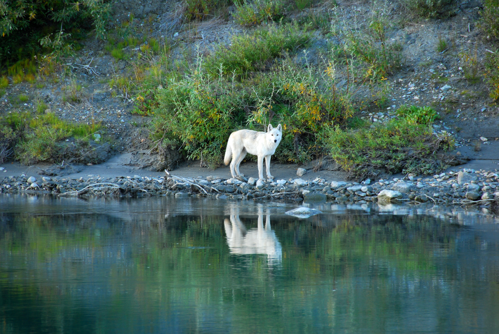
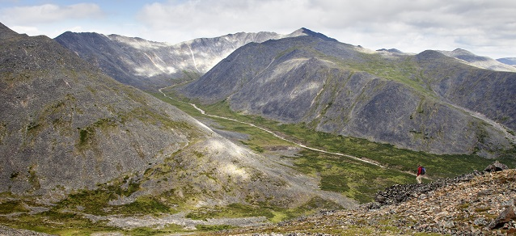
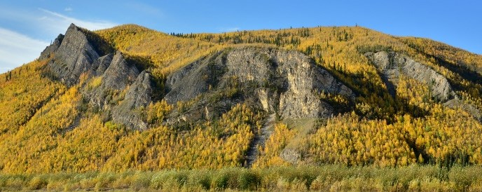
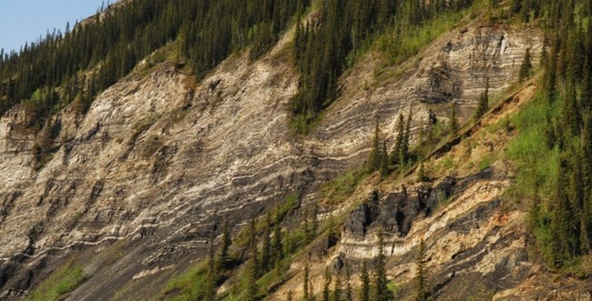

A national preserve is an area having characteristics of a national park. These areas have Congress' approval for hunting, trapping, and oil/gas exploration and extraction.
Bering Land Bridge National Preserve
  Bering Land Bridge National Preserve is a remnant of what once was the Bering Land Bridge. Most archeologists believe that it was across the Bering Land Bridge that humans first traveled from Asia to populate the Americas. During the Last Ice Age, about 12,000 years ago, the water level of the oceans were lower, exposing land that today is under the Bering and Chukchi Seas. This exposed area provided a migration route for people, animals, and plant life.
Noatak National Preserve
 



Noatak National Preserve is located in the northwestern part of Alaska and was established to protect the Noatak River Basin. This basin is thought to be the last remaining complete river system in the United States that has not been altered by human activities. The basin was proclaimed a United States National Monument in 1978 and a National Preserve in 1980.
Yukon-Charley Rivers National Preserve
  Yukon-Charley Rivers National Preserve was proclaimed as a United States National Monument on December 1, 1978, and was redesignated a National Preserve on December 2, 1980. The Charley River has been named a National Wild River.